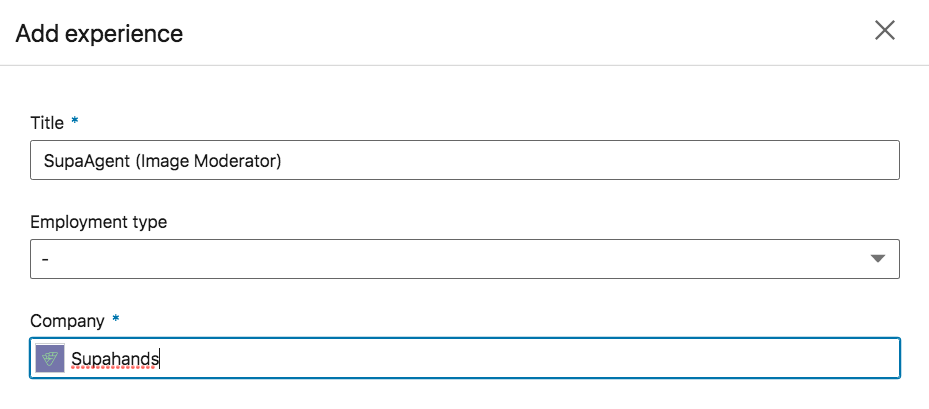
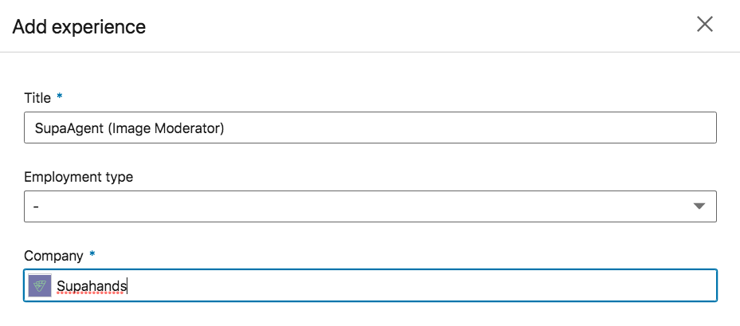
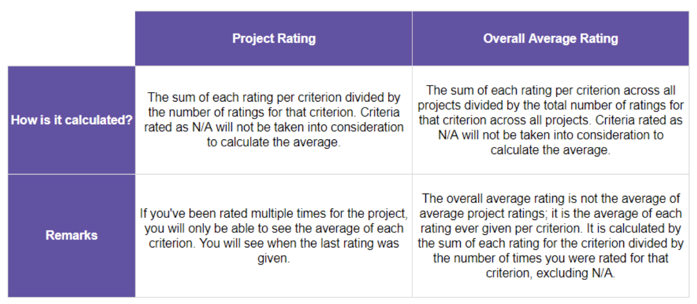
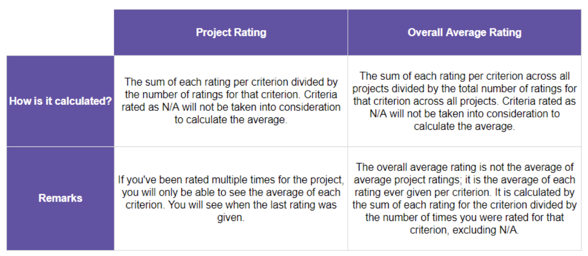

Workplace Profile
Last reviewed: 14 July 2020
Profile
What do I need to do if Workplace does not recognize me when logging in?
Make sure you have received an email granting you access to
Workplace.
If you still can't log in, this might be because your browser is trying to log in with your default Gmail account.
Try the following steps:
- Log out of all current Google accounts.
- Log in to your Gmail account that you used to register as a SupaAgent.
- Go to Workplace and try logging in again.
Can I change the email account I’ve registered with Supahands?
No, at this point it is not possible to change the Gmail account that you used to register as a SupaAgent,
unless it is required for technical reasons.
Need more help? Email SupaAgent Hub.
Need more help? Email SupaAgent Hub.
How can I fill in or edit my profile on Workplace?
Follow these steps to fill in or edit your Workplace profile:
Need more help? Email SupaAgent Hub.
- Log in to Workplace.
- Go to your profile picture at the top right corner.
- Click Edit Profile button.
- Complete these details:
- Personal Information
- Contact Information
- Education and Experience
- Click Save button.
Need more help? Email SupaAgent Hub.
What if I can not edit my profile on Workplace?
If you are unable to go to your profile or if nothing happens, drop a message in the #tech-issues Slack channel and we will get back to you as soon as possible.
Note: You cannot self-edit your Full Name, Government-issued ID, and Banking Information. If these information needs to be updated, please contact supaagent.hub@supahands.com
Need more help? Email SupaAgent Hub.
Need more help? Email SupaAgent Hub.
How do I update my profile picture on Workplace?
Your Workplace profile picture is linked to your Google account, so if you change it for the email address you’ve registered with us, it will also be updated on Workplace.
Need more help? Email SupaAgent Hub.
Need more help? Email SupaAgent Hub.
How do I resign from being a SupaAgent?
You can submit your resignation by sending an email to supaagent.hub@supahands.com
Should you want to have a (long) break from being a SupaAgent but are still considering to work on projects in the future, then there is no need to resign.
Need more help? Email SupaAgent Hub.
Need more help? Email SupaAgent Hub.
If I would like to add working at Supahands to my experiences on LinkedIn, how should I input it?
Please put SupaAgent as your Job Title. In addition, if you wish to go into more detail for the job position, you can place it in brackets, such as:
SupaAgent (Data Enricher)
SupaAgent (Image Moderator)
SupaAgent (Online Support)

Need more help? Email SupaAgent Hub.
SupaAgent (Data Enricher)
SupaAgent (Image Moderator)
SupaAgent (Online Support)

Need more help? Email SupaAgent Hub.
Ratings
Where can I find my ratings?
There are two types of ratings shown on Workplace, namely the Project Rating and your Overall Average Rating.
Need more help? Email SupaAgent Hub.
- Project Rating is shown under the Ratings tab on your profile.
- Overall Average Rating is shown at the top bar of your profile (beside your profile picture).
Need more help? Email SupaAgent Hub.
How are my ratings calculated?
There are two types of ratings shown on Workplace, namely the Project Rating and your Overall Average Rating.
The way they are calculated are quite similar as they do not take N/A into consideration nor will it be based on averages.

Need more help? Email SupaAgent Hub.
Need more help? Email SupaAgent Hub.
What are the criteria for which I can be rated for?
The criteria for which you will be rated are Conduct, Accuracy, Commitment and Speed.
The ratings given are on a scale from 1 to 5 stars, whereby 1 is the lowest and 5 is the highest.
The Project Manager is also able to select N/A (Not Applicable) for various scenarios, e.g. if you haven’t done any work for a project you were assigned to, then your Accuracy can not be rated and therefore this criterion shall be rated as N/A.

Need more help? Email SupaAgent Hub.

Need more help? Email SupaAgent Hub.
For what will my rating(s) be used?
Your rating may be taken into consideration when Project Managers assign agents to their projects.
Need more help? Email SupaAgent Hub.
Need more help? Email SupaAgent Hub.
When will I receive a rating for my work?
The Project Manager can rate you anytime during a project, but most of the time you will be rated at the end of a project.
Need more help? Email SupaAgent Hub.
Need more help? Email SupaAgent Hub.
How often can I get rated for a project?
Depending on the length of the project you may be rated multiple times. For short and/or one-off project, the Project Manager will usually only rate you once; for ongoing projects, the Project Manager may decide to rate you multiple times, which can be in your advantage as your performance may improve due to growth in your knowledge, experience and skills.
Need more help? Email SupaAgent Hub.
Need more help? Email SupaAgent Hub.
Project Types and Labels
How can I add labels to my profile?
Pick up labels to indicate your skills such as languages and applications, knowhow such as expertise and locality, as well as other things like availability and what kind of devices you use.
This will enable you to showcase your abilities while also letting us know the kind of work you're interested in doing. For example, if you're great at Photoshop but don't want to work on projects involving this skill, then feel free to not pick up this label. This will then help us to more efficiently assemble a team of SupaAgents according to project requirements.
Watch this tutorial or follow these steps:
Need more help? Email SupaAgent Hub.
- Log in to Workplace
- Go to your profile picture at the top right corner and click Edit Profile
- Select the Project Types and Labels tab
- Click the Add/Edit Labels button
- You will see a selection of labels which you can pick up according to the qualifying criteria mentioned in the description for each category.
Need more help? Email SupaAgent Hub.
What are the project types?
These are the project types that you can unlock at this point:
If you’ve passed Level 2 for Content Moderation, Data Management or Online Support, then you’ve automatically unlocked Level 1 as well.

Need more help? Email SupaAgent Hub.
- Lead Generation
- Content Moderation 2
- Data Management 2
- Online Support 2
If you’ve passed Level 2 for Content Moderation, Data Management or Online Support, then you’ve automatically unlocked Level 1 as well.
Need more help? Email SupaAgent Hub.
How do I know the Project Type of a project?
You can find the abbreviated Project Type on each list shown in the Projects section on Workplace. Hover your mouse over the abbreviation to view the meaning. You can also find it under the Project Requirements in the Details tab of each project.
Need more help? Email SupaAgent Hub.
Need more help? Email SupaAgent Hub.
How can I unlock more Project Types?
To unlock more Project Types, follow these steps:
Need more help? Email SupaAgent Hub.
- Log in to Workplace
- Go to your profile picture at the top right corner and click Edit Profile
- Click on the Project Types and Labels tab
- You will see several project types. Click Unlock to take the assessment
Need more help? Email SupaAgent Hub.
How do I know if I pass the Project Type assessment?
For all Project Type assessments except Lead Generation, you’ll receive the results on the same day via email. You should also see the abbreviated project type label(s) appear on your profile.
If you do not see the unlocked project type on your profile, please contact supaagent.hub@supahands.com
Need more help? Email SupaAgent Hub.
If you do not see the unlocked project type on your profile, please contact supaagent.hub@supahands.com
Need more help? Email SupaAgent Hub.
Can I retake the Project Type assessment if i fail?
Yes, you can try again as there is no limit to how many times you can take the Project Type assessment.
Need more help? Email SupaAgent Hub.
Need more help? Email SupaAgent Hub.
Referral
Referral
How does the SupaAgent Referral Programme work?
Note: This programme is temporarily paused.
As we would like to encourage you to share this great opportunity with your friends and family, we have a referral program where you'll get the chance to earn USD 2.30.
How it works:
Example:
April: Your friend joins and gets onboarded.
May: Your friend reaches the minimum payout of USD 5.00 and gets paid.
June: You get paid the USD 2.30 fee (according to the SupaPayments schedule)"
Need more help? Email SupaAgent Hub.
As we would like to encourage you to share this great opportunity with your friends and family, we have a referral program where you'll get the chance to earn USD 2.30.
How it works:
- Refer your friends and get them to apply to be a SupaAgent via www.supaagents.com
- Once they pass the assessment, they will receive the link to the SupaAgent Details Form where they can enter your SupaAgent ID as the referrer. See image below. Note: Any mentions after will not be entertained. [screenshot from here page 24]
- Your friend will then need to go through the rest of the onboarding process and complete enough work to reach the minimum payout amount, which is currently USD 5.00. This amount has to be reached within the first two SupaPayments cycles after they've joined.
- Once we confirm all requirements are met, you will receive USD 2.30 in the following SupaPayments cycle.
Example:
April: Your friend joins and gets onboarded.
May: Your friend reaches the minimum payout of USD 5.00 and gets paid.
June: You get paid the USD 2.30 fee (according to the SupaPayments schedule)"
Need more help? Email SupaAgent Hub.
How do I know if I will be paid for referral bonus?
Note: The referral programme is currently paused.
You should see the bonus amount reflected in your payment.
Need more help? Email SupaAgent Hub.
You should see the bonus amount reflected in your payment.
Need more help? Email SupaAgent Hub.
Policies
SupaAgent Terms and Conditions (Contract)
SupaAgents Terms and Conditions (Contract)
Privacy Policy
Privacy Policy